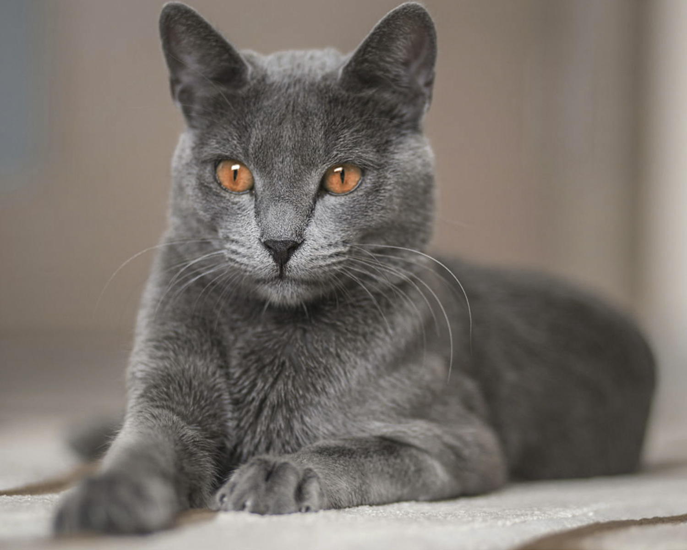
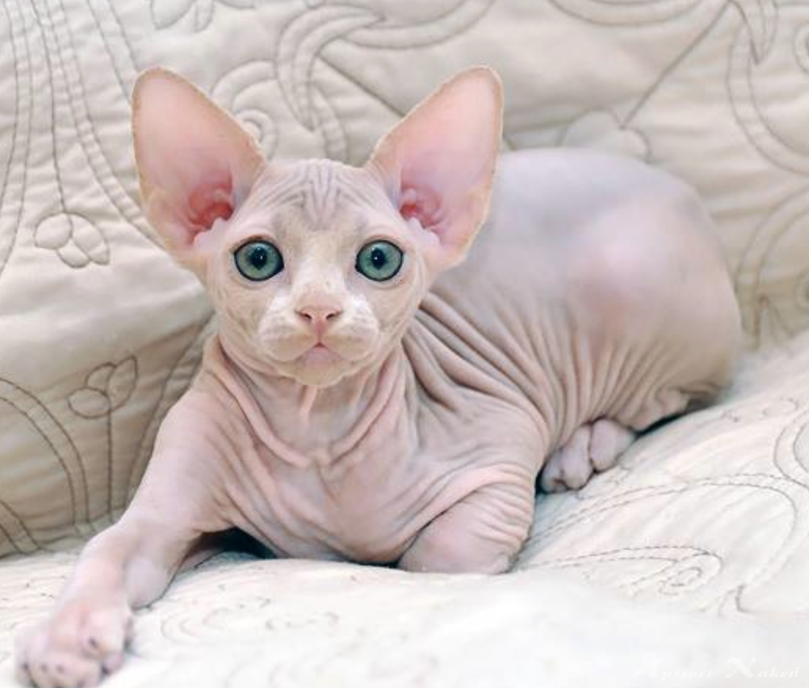

- История этой кошки начинается еще в VIII веке. В то далекое время эта порода кошек встречалась в северных частях Финляндии, России и Норвегии. Из-за великолепного красивого цвета мех русских голубых кошек северные народы использовали для пошива теплых перчаток и накидок. Но постепенно отношение к этим необыкновенным животным изменилось к лучшему. Они стали домашними любимцами русского народа, по славянским традициям этим кошкам доверялось хранить сон младенцев, отгоняя от них злых духов. Так на протяжении многих веков эти кошки жили вместе с людьми и считались обычными домашними животными. Лишь в 1901 году эта порода кошек получила официальное признание. А в 1912 году в Великобритании стали признавать русских голубых кошек как отдельную породу, называя их иностранными голубыми. Затем в 1930 году сформировалась ассоциация любителей русской голубой кошки. После Второй Мировой Войны представителей этой породы кошек практически не осталось. Только благодаря работе ценителей, используя оставшийся генетический материал и скрещивая эту породу с другими, удалось спасти русских голубых кошек от полного исчезновения. Восстановить полное соответствие голубых кошек первоначальным данным удалось спустя много лет, в 1972 году.
- Минксин - необычная порода кошек появилась совсем недавно и в квалификации TICA признана экспериментальной. Считается, что ее основателем является Пауль Максорлей. Ему принадлежит идея создания карликовой коротконогой кошки. В 1998 году он начал работу над созданием новой породы кошек, скрестив канадского сфинкса и манчкина. Затем к этим двум породам были добавлены девон-рекс и бурма. Селекционеры хотели создать миниатюрную коротколапую кошку с велюровой кожей как у сфинкса и мягкой вьющейся шерстью на пойнтах, как у рексов. Котенок, отвечающий всем вышеперечисленным требованиям появился спустя два года с начала работ, в 2000 году. Селекционные работы над совершенствованием данной породы проводится до сих пор. В 2012 году кошек - минскинов насчитывалось чуть больше 100. С 2008 года данная порода кошек допускается для участия в выставках.
